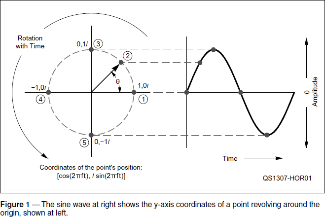
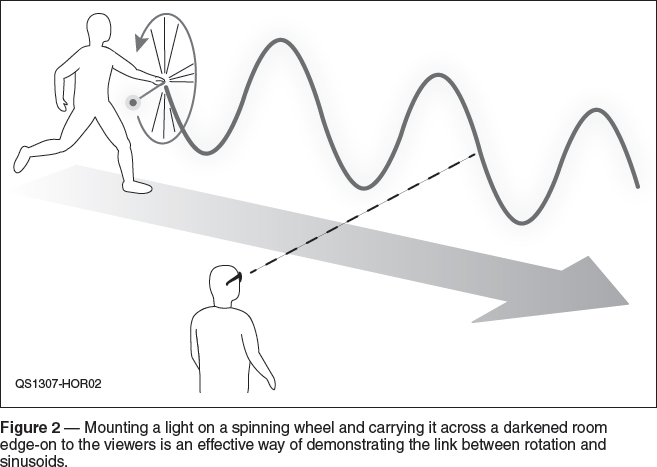
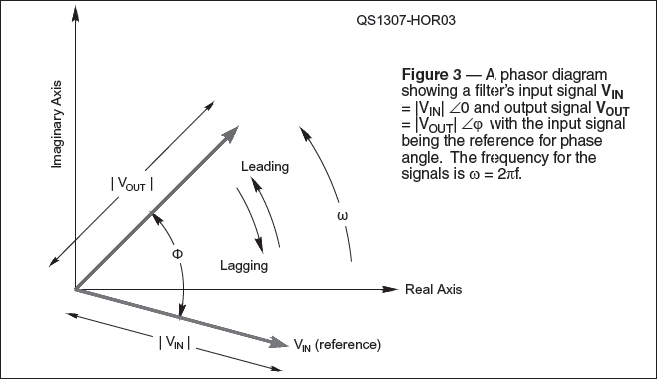

Electronic Fundamentals
Experiment #127 — Phasors, Part 2
No, not the kind of phaser you set on stun, silly! If you passed your General exam, you learned about phase and a little bit about angular frequency. Amateur Extra class licensees (and those studying for the Extra) have even used phasor notation, although it was called by another name.
In this two-part column, we’ll start by developing basic concepts to show what a phasor is and how it relates to things you already understand. Then we’ll progress to examples of using phasors to describe electrical and radio phenomena, such as modulation. As ham radio begins to use more advanced types of modulation, understanding phasors will provide an important bridge between the familiar AM/SSB modulation and the future.
The Sinusoid
Like many meals in radio, this dish begins with a sine wave and is seasoned with complex numbers. (You can find these subjects in the math tutorials for the General and Extra exams listed on the ARRL website.1) The sine wave (or sinusoid) looks like a regularly increasing and decreasing wave but as Figure 1 shows, it is really related to rotation.

Imagine a point revolving counter-clockwise in a circle around the origin of the complex plane as at the left of Figure 1. If the point is one unit from the origin the coordinates for each location visited by the point are [cosθ, i sinθ], where θ (the Greek letter theta) is the angle from the positive x axis to the line from origin to the point. This circle, not surprisingly, is called the unit circle because the value of its radius is 1 or unity.
As the point revolves around the origin, θ steadily increases from 0 to 360° and begins again at 0° with each cycle. (Counterclock-wise is considered the positive direction.) If the point always moves at the same speed, the frequency of the cycles around the origin, f, does not change and the point moves 360 × f degrees every second. That means the number of degrees a point has moved in t seconds, θ = 360 × f × t.
There are 2π radians (another unit of angular measurement) in a circle so θ = 2π × f × t. The quantity 2πf is referred to as angular frequency, ω, and you see it used in the formulas for reactance and many other electrical calculations that depend on frequency.
Tying it all back together, the coordinates for the position of the point for every point in time as it moves around the circle are [cos(2πft), i sin(2πft)] and the graph at the right of Figure 1 plots the point’s y (or imaginary) coordinate versus time, creating a sine wave. If we plotted the point’s x (or real) coordinate versus time, it would create a cosine wave.
Making the leap from a point moving around the circle to something more electrical, the magnitude of the point’s imaginary coordinate, sin(2πft) = sin(wt), can also be a voltage or current or field strength. In fact, the familiar sine wave of ac power comes from the rotational motion of a generator’s field coil. As the coil passes through the magnetic field in the generator, the angle between the coil and the field changes in the same way as our point moves around the origin. This changing relationship between the coil and the field creates a sinusoidal voltage in the coil.
While both sine and cosine waves are generally referred to as sinusoids, they differ from each other in an important way. Starting from t = 0, the cosine wave starts at a value of 1 + 0i and the sine wave at 0 + i. Other than starting at different values, the waves are identical. The cosine wave describes the real coordinate and the sine wave describes the imaginary coordinate.
You can also think of that difference in starting value as a difference in angle, in which the sine wave is π/2 radians (90°) ahead of the cosine wave. This difference never changes because both waves are describing the same thing — constant rotation. The position of a particular point on the wave is its phase and the amount of the difference is called the phase angle, 90° in this case.
This is where the following trigonometric identities come from: sinθ = cos(θ – 90°) = cos(θ – π/2) and cosθ = sin(θ + 90°) = sin (θ + π/2). Many, many more such relationships between sine and cosine waves become obvious (or at least more understandable) when viewed from the standpoint of rotation and the unit circle.
Polar Notation
So far we have used the rectangular form for the coordinates of our moving point: x + i y. In most engineering technical literature, the letter j is used instead of i to avoid confusion with current and from here on in the column, we’ll do so, as well.
Next is the form that you may have already learned (or will learn!) for your Extra class exam and that is the polar form in which the coordinates take the form of a radius and an angle: r ∠θ. Polar form is read “r at (an angle of) theta.” Using polar form coordinates for a point on the unit circle is easy because they’re always 1∠θ. If you are describing the point’s position as it whirls around the circle, you can use the equation for angular frequency we figured out earlier and the coordinates become 1∠(2πft) = 1∠(ωt). So this particular method is a good shorthand way of describing what the moving point is doing.
Introducing the Phasor
When dealing with RF signals and circuitry, it’s often true that the frequency of the signals doesn’t change. Think of an RC low-pass filter, for example: the input signal VIN sin (ωt + 0) and output signal VOUT sin (ωt + ϕ) have the same frequency, even though their amplitudes are different by the ratio of VOUT/VIN and they are offset in phase by ϕ.
Assuming the same frequency for both signals, our polar form can now be simplified to V∠ ϕ where ϕ is just the phase angle between a signal and some reference signal or phase. The input signal to a circuit is usually the reference for measuring phase differences.
Hey, guess what? V∠ ϕ is a phasor! A phasor is just a complex number that represents the amplitude and phase of a sinusoid and the V∠θ polar notation is just convenient mathematical shorthand. Phasors are a type of vector – quantities that have both a magnitude and a direction. In the case of V∠ ϕ, the magnitude is |V| and the direction is the phase angle, ϕ, so the more cumbersome name “phase vector” was shortened to “phasor.” (As a vector, a phasor is often shortened even further and written as a single bold letter, such as V or I.)


If our original sine wave is the reference signal, the phasor describing the sine wave is V∠0 and the cosine wave is V∠–90° or V∠–π/2. Remember, the frequency is assumed to be the same for both signals, whether 60 Hz from the power grid or 14.200 MHz on 20 meters. Figure 3 shows a phasor diagram for the signals at the input and output of a filter.
There is a final way to describe the signal — the exponential form in which it is represented as V ejθ. This form comes from the mathematics behind Euler’s equation2 in which the coordinates of our point are miraculously shown to be equivalent to ejθ = cos θ + j sin θ. The serious and beautiful math3 behind this equation lies at the heart of much of electrical engineering and leads to the jaw-dropping Euler’s identity: ejπ = –1 which unites the two most widely used transcendental numbers (e and π), imaginary numbers (j), negation and unity. Not bad for a point moving in a simple circle, huh?
Notes
1www.arrl.org/studying-for-the-general-license, click on “Math Tutorials,” then “Tutorials on Math for License Exams”
2Nahin, Paul J., Dr. Euler’s Fabulous Formula: Cures Many Mathematical Ills (Princeton University Press, 2006).
3In his Lectures on Physics, physicist Richard Feynman characterized the equation as “our jewel” and “one of the most remarkable, almost astounding, formulas in all of mathematics.”